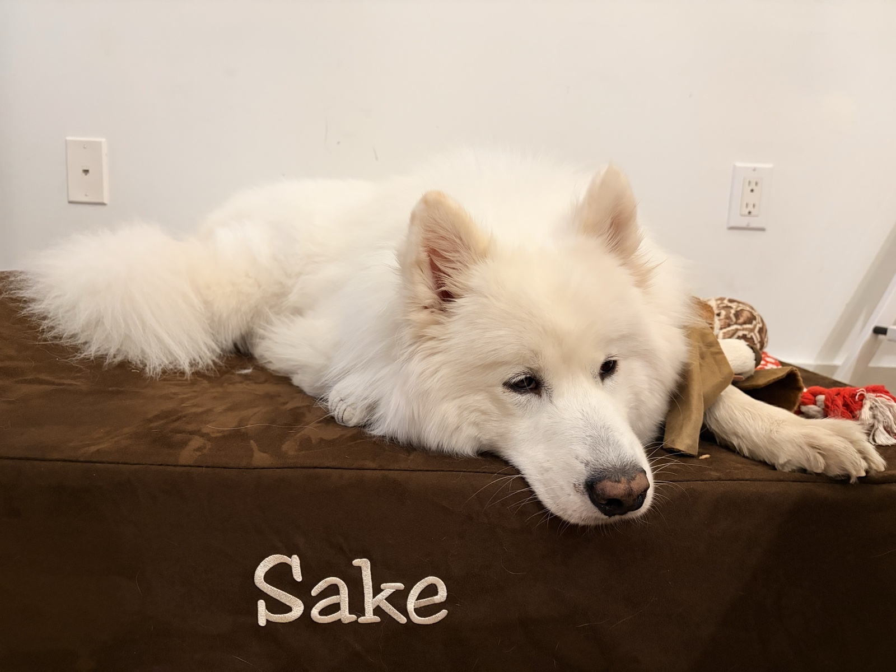
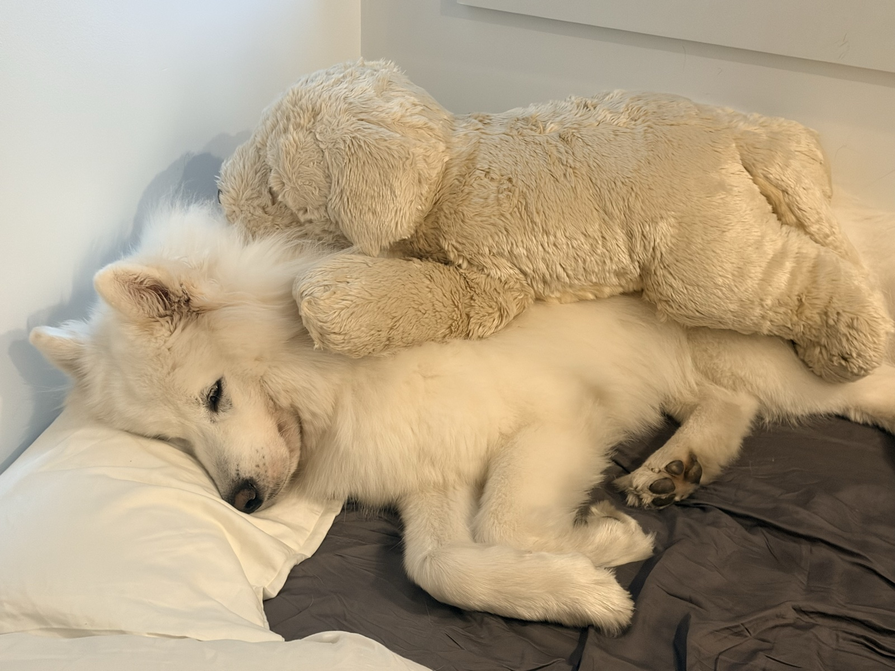
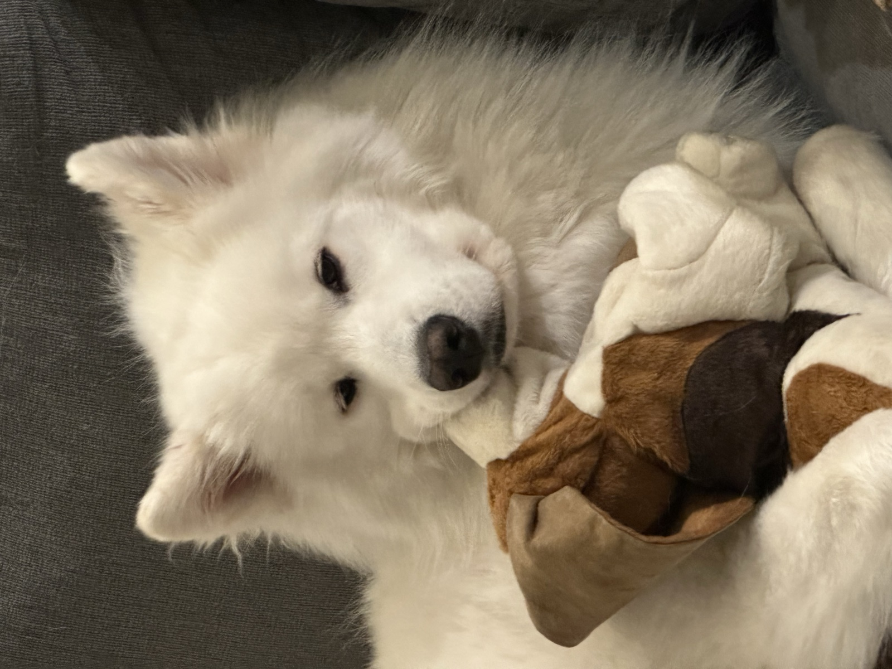
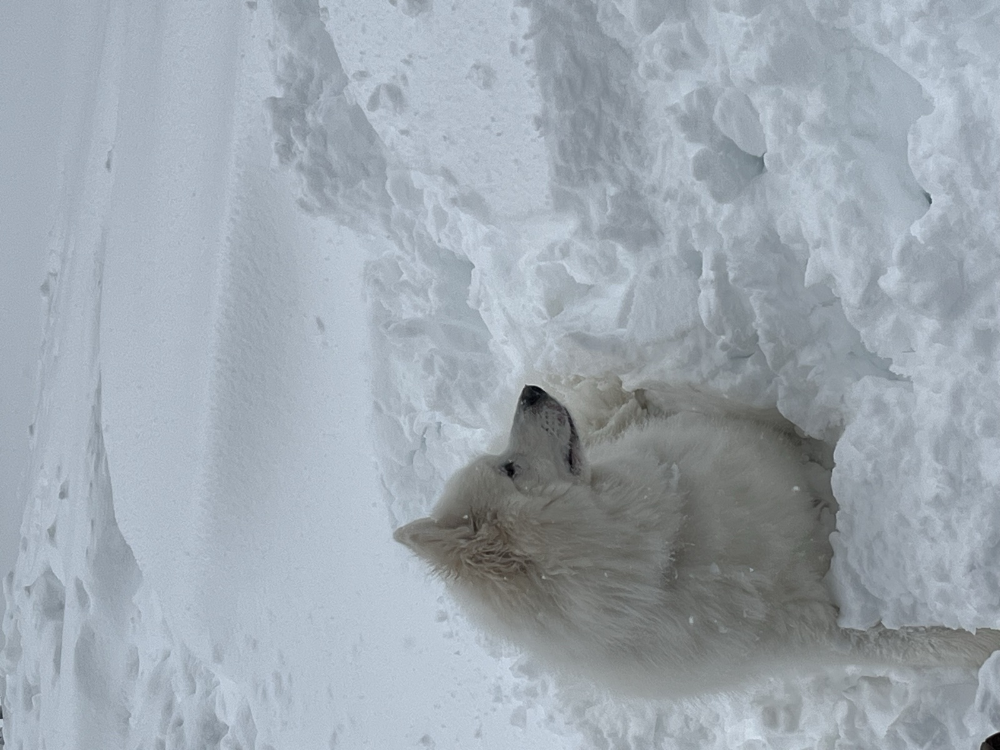
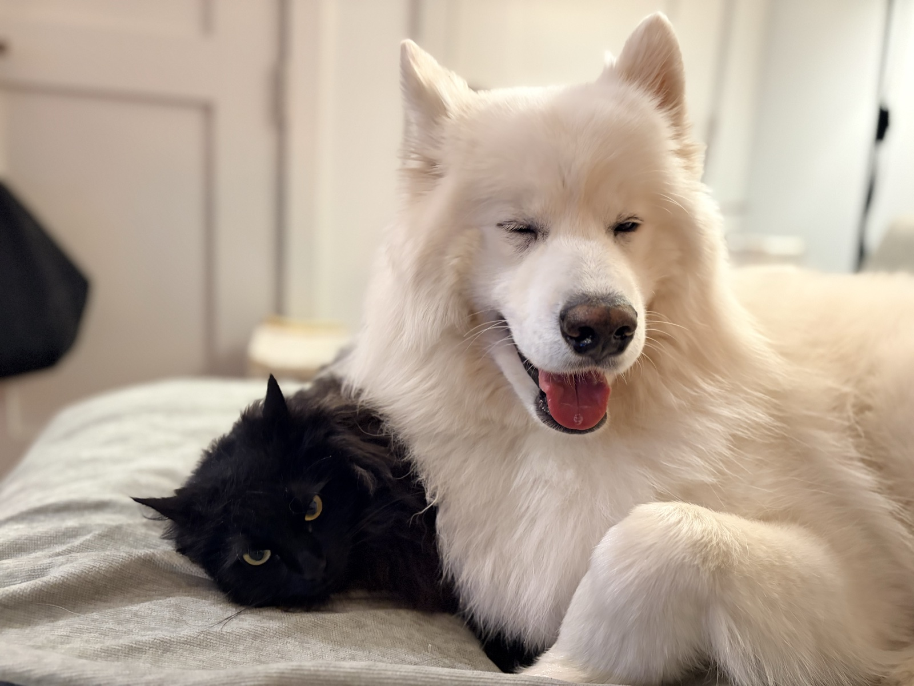
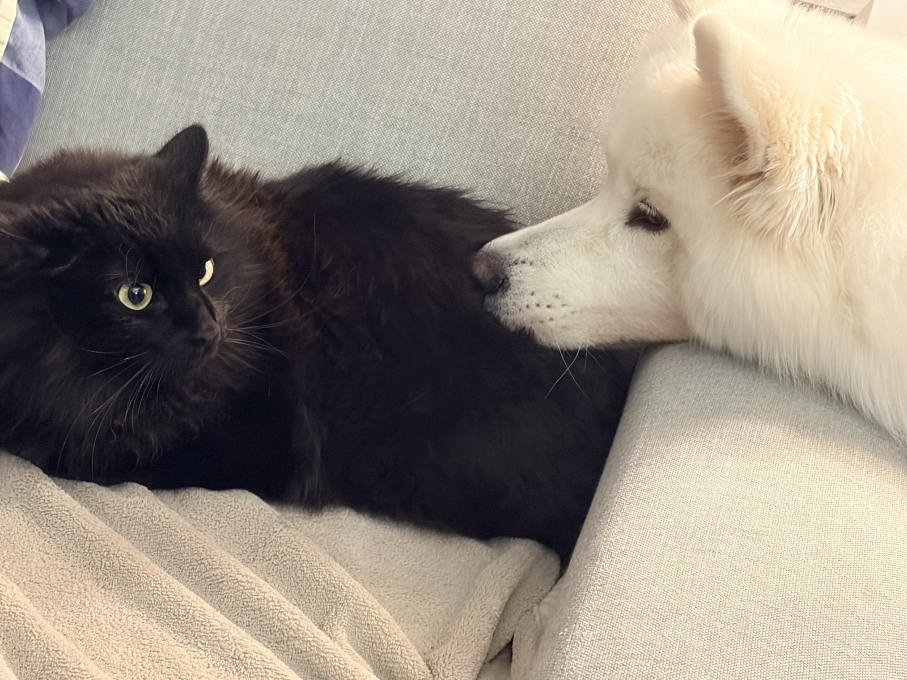
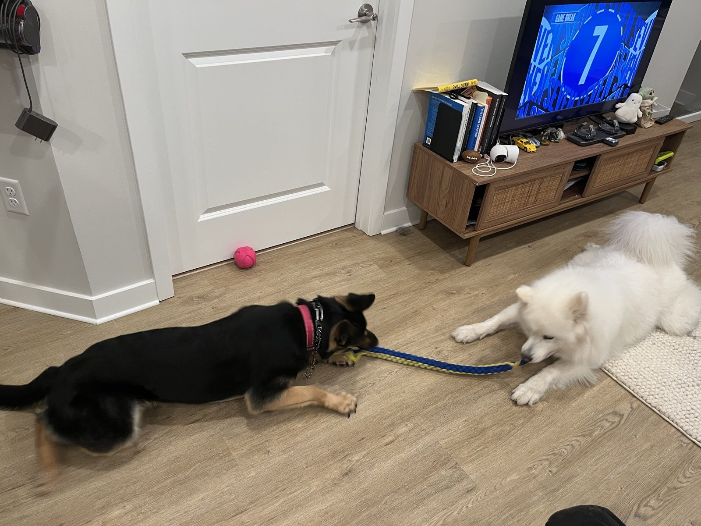

Sake's Page
Sake · Samoyed..? · 3yo · Chief Distraction Officer
Meet Sake: a shameless attention hog and part-time Samoyed. He loves people, snow, and dragging me out of meetings. He hates kibble, closed doors, and anyone who sees him and somehow doesn't pet him.




Sake also has a social life — somehow busier than mine.


